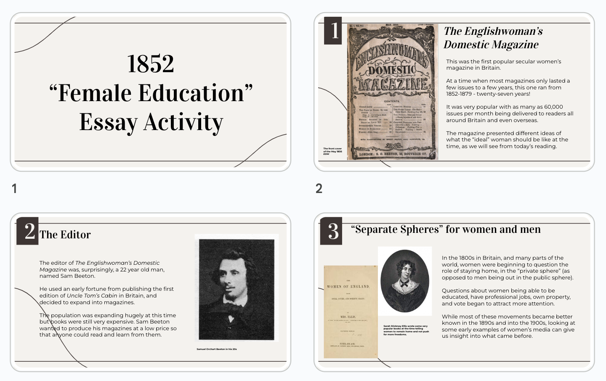
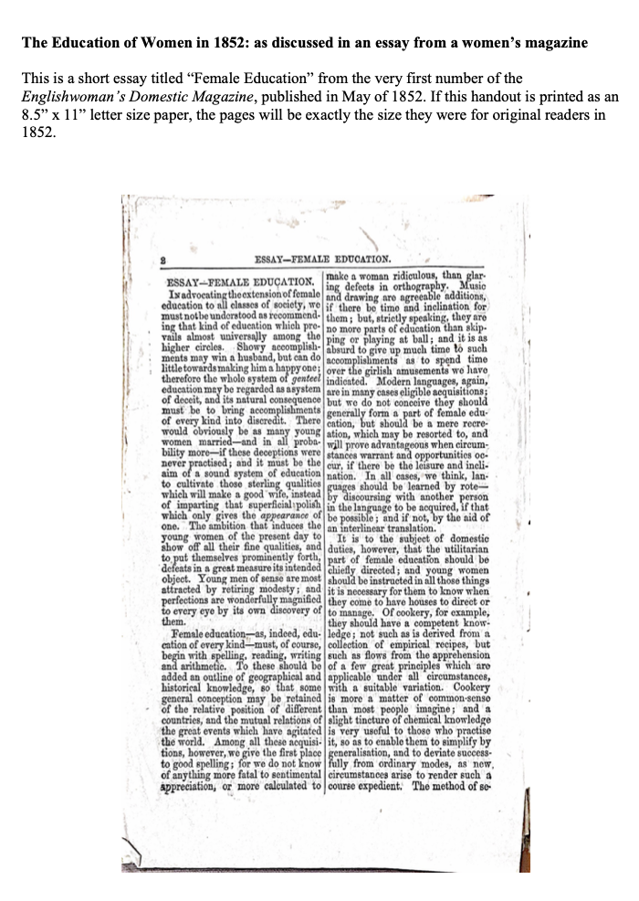
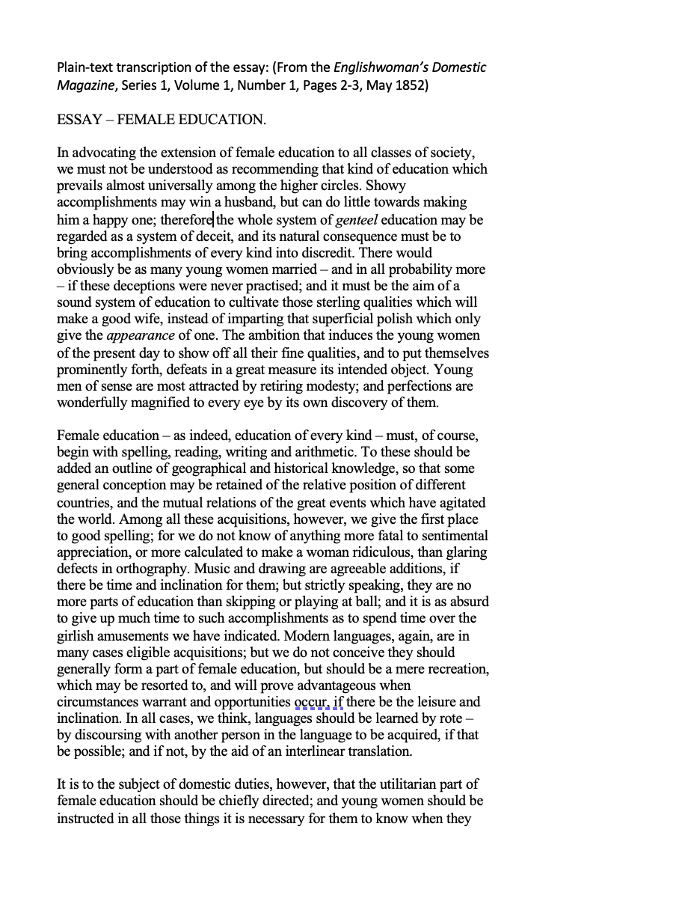
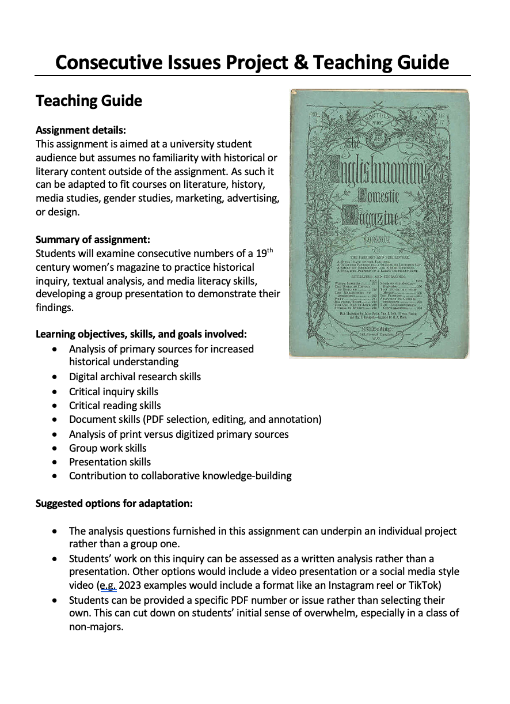
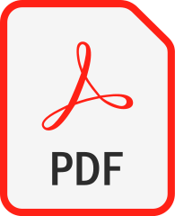

Open educational resources are learning materials that are made available for others to freely adapt and remix in their own teaching and learning. The materials presented here involve the first secular women's magazine in Britain, the Englishwoman's Domestic Magazine, which was published between 1852-1879, in London, especially during the period when it was run by editors Samuel O. Beeton and Isabella Mary Mayson Beeton, between 1852 and 1865.
This is a lesson plan based on an essay from the very first number of the EDM in 1852.
It includes a slideshow in Google Slides, as well as readings for students that include the text of the essay in its original magazine-page form and as plain text.
Click the preview below to go to each file.



Additional formats for each file are available in this folder.
This is a project assignment based on students reading consecutive issues of a historic magazine.
It makes use of the open-access index to the Englishwoman's Domestic Magazine developed for my dissertation project, but could be used with other publications instead.
This assignment can be adapted to work as either a group or individual project. It is available as a PDF and DOCX file below.



This is my third piece of OER. To return to the digital materials, click here.
Once finalized, a PDF version of my project will be available at the link below.
If you have a specific question, feel free to reach out to me.
You are welcome to try them out in any non-commercial setting and adapt them to meet your needs.
Email is usually easiest: juliesorgeway at gmail dot com will find me.
Several other platforms are listed on my profile page and website.
The banner image was created in Microsoft Designer using two Wikimedia Commons images, one of Isabella Beeton and one of the September 1861 cover of the Englishwoman's Domestic Magazine.
This blue cover was designed for the second series rebranding while Isabella Beeton was working as an editor.
{kind=link}
{kind=link}